Code
library(readxl)
A<-read_excel(file.choose())
A$Tributario<-factor(A$Tributario)Matriz de datos básica: Miroalgas
Script Entender el comportamiento de los datos: Script Objetivo1
Script Verificar supuestos: Script Objetivo2
Recordemos que la exploración de datos multivariados tiene dos objetivos:
Descripción de la matriz de datos básicas. La matriz en el archivo de Excel bajo el nombre “Microalgas” hace parte del estudio realizado por Osorio Ávila en el 2013, donde el área de estudio comprendió diferentes sitios de muestreo sobre la cuenca media del Rio Gaira, más específicamente en La Hacienda la Victoria donde existen grandes extensiones de cultivos de diversas variedades de café. Las muestras se tomaron en 3 tributarios definidos de acuerdo con el grado de intervención antrópica: El primer tributario se ubicó en la parte baja de la Hacienda a unos 900 msnm y constituye una zona de alta intervención antrópica debido a la tala y quema del bosque con fines de adecuación de la zona para el cultivo de café; el segundo tributario se ubicó cerca de la parte alta de la hacienda, a unos 1100 msnm expuesto a la entrada de sustancias químicas como pesticidas y nutrientes; y el tercer tributario se ubicó en la parte más alta de la hacienda, a unos 1200 msnm y presenta poca intervención antrópica (tributario control). Para cada muestra se midieron 9 parámetros fisicoquímicos y se registro la abundancia de 21 géneros de microalgas. (ver tabla 1).
Tabla 1. Descripción de las variables.
| Variables | Unidad de medición |
|---|---|
| Amonio | Niveles medio en μg/L |
| Nitrito | Niveles medio en μg/L |
| Nitrato | Niveles medios en μg/L |
| Oxigeno | Niveles medio de oxígeno disuelto en mg/L |
| pH | Nivel medio en unidades de pH |
| Caudal | Nivel medio en m3/s |
| Luz | Cantidad media en lux. |
| Temp | Temperatura media del agua en °C |
| Cond | Conductividad eléctrica media en µS/cm |
| Género | N° de individuos |
Importemos los datos e indiquemos al programa que la variable Tributario es de naturaleza cualitativa usando la función "factor()"
library(readxl)
A<-read_excel(file.choose())
A$Tributario<-factor(A$Tributario)library(readxl)
library(tidyverse)
library(MVN)
library(ggplot2)
library(ggpubr)
library(reshape)
library(ggExtra)
library(ggridges)
library(ggmosaic)
library(lattice)
library(car)
library(GGally)
library(corrplot)Para ejemplificar el proceso de la descripción númerica de datos cuantitativos de la matriz de datos básica emplearemos las observaciones de los parámetros fisicoquímicos y calcularemos los estadísticos de posición de cada uno usando la función "summary()"
summary(A[,2:10]) Amonio Nitrito Nitrato Oxigeno
Min. :0.02844 Min. :0.1471 Min. :0.3860 Min. :4.960
1st Qu.:0.12915 1st Qu.:0.3640 1st Qu.:0.7115 1st Qu.:5.902
Median :0.20024 Median :0.4779 Median :0.8980 Median :6.535
Mean :0.68355 Mean :0.5349 Mean :1.4406 Mean :6.604
3rd Qu.:0.45794 3rd Qu.:0.6213 3rd Qu.:1.4895 3rd Qu.:7.600
Max. :5.90521 Max. :1.1765 Max. :5.2420 Max. :8.160
pH Caudal Luz Temp
Min. :6.430 Min. :0.0160 Min. : 100 Min. :15.20
1st Qu.:7.428 1st Qu.:0.0850 1st Qu.: 800 1st Qu.:17.10
Median :8.170 Median :0.4055 Median : 2750 Median :17.60
Mean :8.083 Mean :0.5873 Mean : 6506 Mean :17.36
3rd Qu.:8.600 3rd Qu.:1.2377 3rd Qu.: 3950 3rd Qu.:17.95
Max. :9.630 Max. :1.5890 Max. :51000 Max. :19.00
Cond
Min. :43.0
1st Qu.:44.0
Median :45.5
Mean :55.0
3rd Qu.:76.0
Max. :77.0 Hagamos ahora una descripción de una variable cuantitativa, Amonio pero separada por una variable cualitativa Tributario usando la función "summarise()" ubicada en la librería "tidyverse"
library(tidyverse)
A %>%
group_by(Tributario) %>%
summarise(M=mean(Amonio),
SD=sd(Amonio),
Mdn=median(Amonio),
Q1=quantile(Amonio,probs =0.25),
Q3=quantile(Amonio,probs = 0.75)
)# A tibble: 3 × 6
Tributario M SD Mdn Q1 Q3
<fct> <dbl> <dbl> <dbl> <dbl> <dbl>
1 1 0.648 0.639 0.301 0.203 1.04
2 2 0.917 2.02 0.141 0.0847 0.414
3 3 0.486 0.813 0.171 0.138 0.328Hagamos ahora una descripción de varias variable cuantitativas de manera general, y separadas por una variable cualitativa Tributario usando la función "mvn()" ubicada en la librería "MVN" apartado de salida $Descriptives
library(MVN)
mvn(data = A[,2:5])$Descriptives n Mean Std.Dev Median Min Max 25th
Amonio 24 0.6835506 1.2671367 0.2002370 0.02843602 5.905213 0.1291469
Nitrito 24 0.5349265 0.2331993 0.4779412 0.14705882 1.176471 0.3639706
Nitrato 24 1.4405833 1.2651493 0.8980000 0.38600000 5.242000 0.7115000
Oxigeno 24 6.6037500 0.9980625 6.5350000 4.96000000 8.160000 5.9025000
75th Skew Kurtosis
Amonio 0.4579384 3.02444177 9.2433051
Nitrito 0.6213235 0.87445836 0.3598191
Nitrato 1.4895000 1.49515560 1.2172395
Oxigeno 7.6000000 -0.08010917 -1.3673126mvn(data = A[,1:5],subset = "Tributario")$Descriptives$`1`
n Mean Std.Dev Median Min Max 25th 75th
Amonio 8 0.6475118 0.6386418 0.3009479 0.1350711 1.912322 0.2031991 1.0444313
Nitrito 8 0.6397059 0.3355299 0.6250000 0.1470588 1.176471 0.4411765 0.8492647
Nitrato 8 1.5953750 1.1775931 0.8980000 0.5240000 3.429000 0.7835000 2.7175000
Oxigeno 8 6.5262500 1.1009987 6.3100000 5.1000000 7.900000 5.6150000 7.6825000
Skew Kurtosis
Amonio 0.8525289 -0.8948451
Nitrito 0.0882455 -1.4642750
Nitrato 0.4778119 -1.8229909
Oxigeno 0.1100799 -1.9149037
$`2`
n Mean Std.Dev Median Min Max 25th
Amonio 8 0.9170616 2.0245464 0.1409953 0.02843602 5.9052133 0.08471564
Nitrito 8 0.4724265 0.1756700 0.4632353 0.29411765 0.8382353 0.34191176
Nitrato 8 1.1457500 1.0071771 0.9755000 0.38600000 3.5410000 0.62075000
Oxigeno 8 6.4337500 0.9232387 6.3200000 4.98000000 7.6000000 5.90250000
75th Skew Kurtosis
Amonio 0.4135071 1.82410118 1.6245348
Nitrito 0.5147059 0.87238089 -0.3886437
Nitrato 1.0802500 1.57012803 1.0758660
Oxigeno 7.0750000 -0.03953277 -1.5420557
$`3`
n Mean Std.Dev Median Min Max 25th
Amonio 8 0.4860782 0.8127981 0.1706161 0.09952607 2.4810427 0.1380332
Nitrito 8 0.4926471 0.1272353 0.4852941 0.35294118 0.6764706 0.3786765
Nitrato 8 1.5806250 1.6458588 0.8155000 0.61100000 5.2420000 0.7270000
Oxigeno 8 6.8512500 1.0481063 6.8650000 4.96000000 8.1600000 6.3275000
75th Skew Kurtosis
Amonio 0.3276066 1.7972364 1.5583875
Nitrito 0.5919118 0.1314339 -1.9467135
Nitrato 1.3782500 1.3331346 0.1493853
Oxigeno 7.6425000 -0.3919184 -1.2165765Para realizar los gráficos estaremos usando diversas funciones ubicadas en las librerías "ggplot2" , "ggpubr" "gplots", "ggExtra" , "ggridges" , "lattice" , "ellipse" , "ggcorrplot", "corrplot". Iniciaremos explorando la distribución de los datos y algunas opciones comparativas.
library(ggplot2)
library(ggpubr)
# Univariado
A %>% ggplot(aes(Eunotia)) +
geom_bar(aes(y = (..count..)/sum(..count..)),fill="#FFB603") +
scale_y_continuous(labels=scales::percent) +
labs(y="Cantidad de muestras(%)",
x="N° de individuos del género Eunotia")+
geom_text(aes( label = scales::percent(..prop..),
y= ..prop.. ), stat= "count", vjust = -.5)+
theme_classic()+
scale_x_continuous(breaks = seq(0, max(A$Eunotia),1))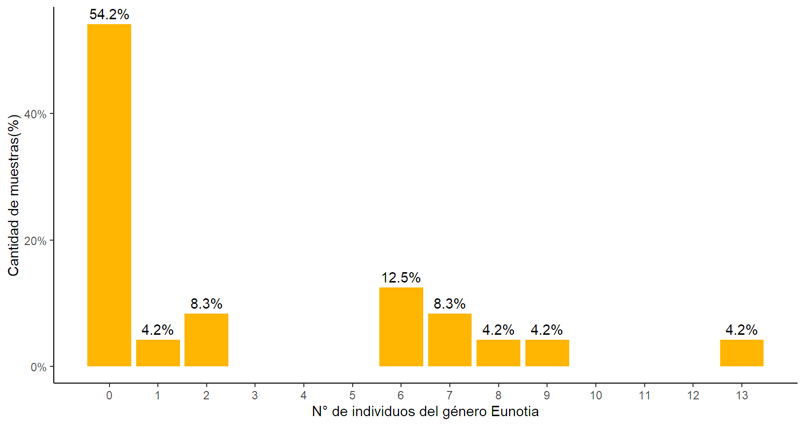
# Comparativo
library(reshape)
melt(A %>%
group_by(Tributario)%>%
summarise(Ab.E=sum(Eunotia),Ab.A=sum(Amphora)) %>% data.frame()) %>%
ggplot(aes(x = Tributario,y = value,fill=variable))+
geom_bar(stat = "identity", position = position_stack(),width=0.5)+
geom_text(aes(label = value,), position = position_stack(),
vjust = 1.5, size = 3.5)+
theme_classic()+
labs(x="Tributario", y="Abundancia (N° de individuos identificados)",
fill="Género")+
fill_palette("GnBu",labels=c("Eunotia", "Amphora"))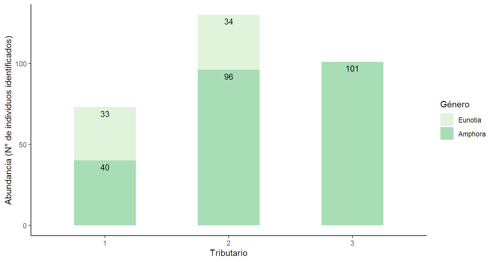
library(ggExtra)
library(ggridges)
ggplot(A, aes(x = Nitrito, y = Tributario)) +
geom_density_ridges(aes(fill = Tributario)) +
scale_fill_brewer(palette = "PiYG")+theme_classic()+
labs(y="Tributario",x="Niveles medio de nitrito (μg/L)")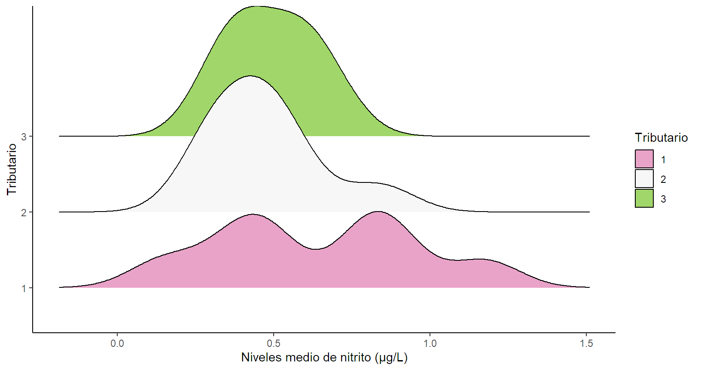
#Reorganización de los datos.
D<-data.frame(Genero=c(rep("Navicula",24),
rep("Pinnularia",24)),
Abundancia=c(A$Navicula,A$Pinnularia))
#Figura
ggplot(D,aes(x = Abundancia,fill=Genero))+
geom_histogram(bins = 10, color = "black",
alpha=0.5,position="identity") +
theme_classic()+labs(x="Abundancia (N° de individuos)",
y="Cantidad de muestras", fill="Género")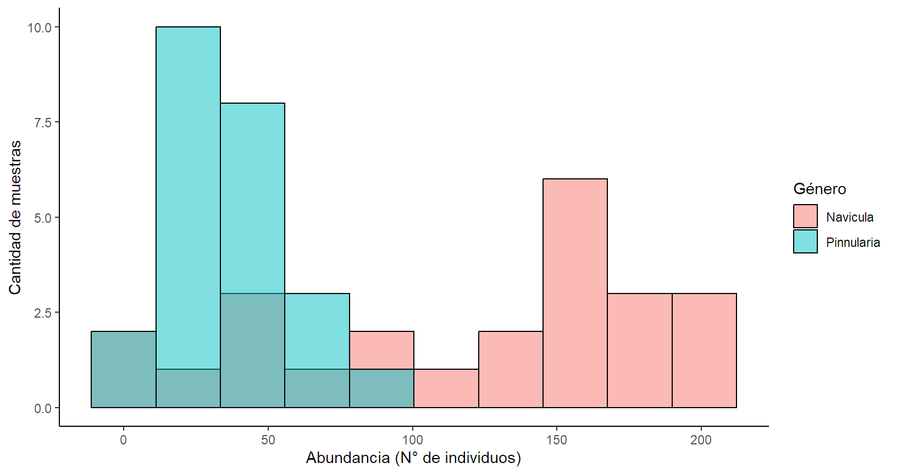
melt(data.frame(A[,c(1,11:24)] %>%
group_by(Tributario))) %>%
group_by(Tributario,variable) %>%
summarise(n=sum(value)) %>%
ggplot(aes(reorder(variable,n),n,fill=Tributario))+
geom_col()+coord_flip()+theme_classic()+
labs(y="Abundancia (N° de individuos)",x="")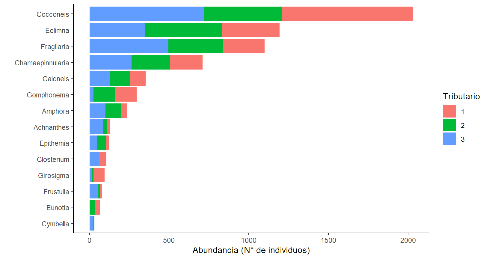
melt(data.frame(A[,c(1,11:24)] %>%
group_by(Tributario))) %>%
group_by(Tributario,variable) %>%
summarise(n=sum(value)) %>%
ggplot(aes(y =variable, x = Tributario))+
geom_point( aes(size=n),fill="lightblue",shape=21)+
geom_text(aes(x=as.numeric(Tributario)+0.2,label=n),
size=2)+
theme_classic()+scale_size_area(max_size=15)+
theme(legend.position = "none")+
labs(y="")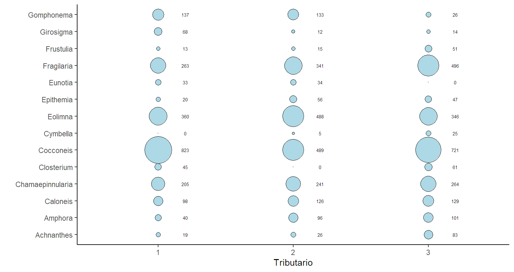
library(ggmosaic)
melt(data.frame(A[,c(1,11:31)] %>%
group_by(Tributario)))%>%
group_by(Tributario,variable) %>%
summarise(n=sum(value)) %>%
ggplot()+geom_mosaic(aes(x = product(Tributario),
fill=variable,weight = n))+
theme_classic()+theme(legend.position = "none")+
labs(y="")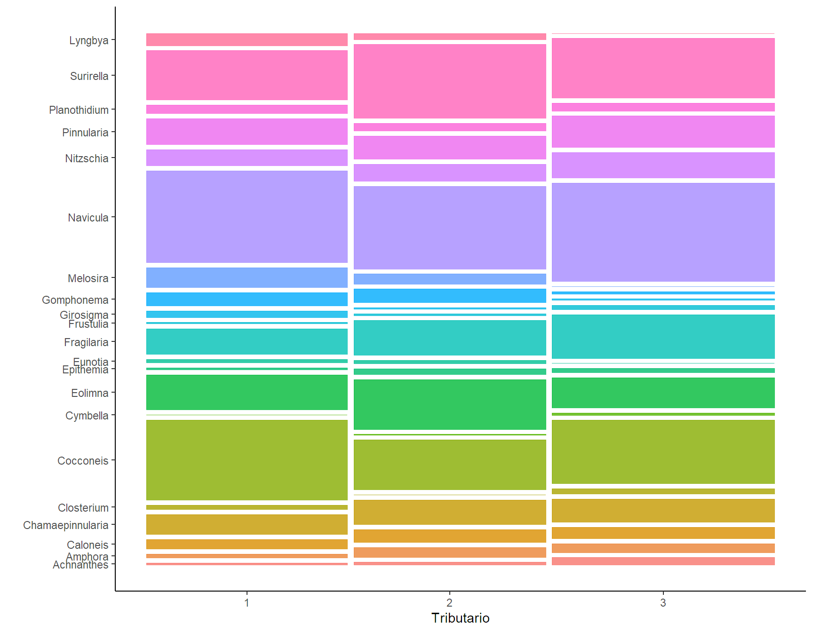
ggplot(A, aes (x=Tributario, y = Nitrato, fill=Tributario)) +
stat_boxplot(geom = "errorbar", position = "dodge", width=0.1)+
geom_boxplot(notch = TRUE, outlier.color = "red") +
stat_summary(fun = mean, geom = "point",
position=position_dodge(width=.75),shape=4)+
labs(x = "Tributario", y="Concentración de nitrato (μg/L)")+
scale_fill_brewer(palette = "PiYG")+ theme_classic()+
theme(legend.position = "none")+ylim(c(0,max(A$Nitrato)))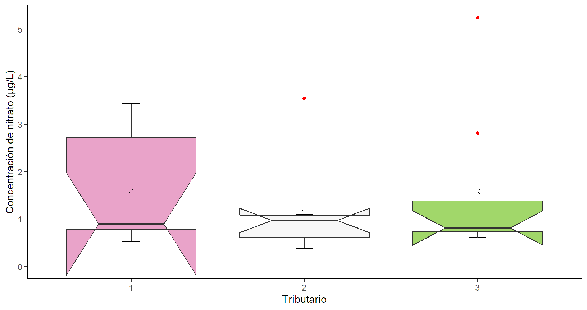
ggplot(data = A,mapping = aes(x = Tributario,
y=Nitrato,fill=Tributario))+
stat_summary(fun=mean,geom="bar",color="black",alpha=0.7, width=0.45)+
stat_summary(fun.data=mean_se,geom="errorbar",width=0.05,colour="black")+
theme_classic()+ theme(legend.position = "none")+
labs(x = "Tributario", y="Concentración de nitrato (μg/L)")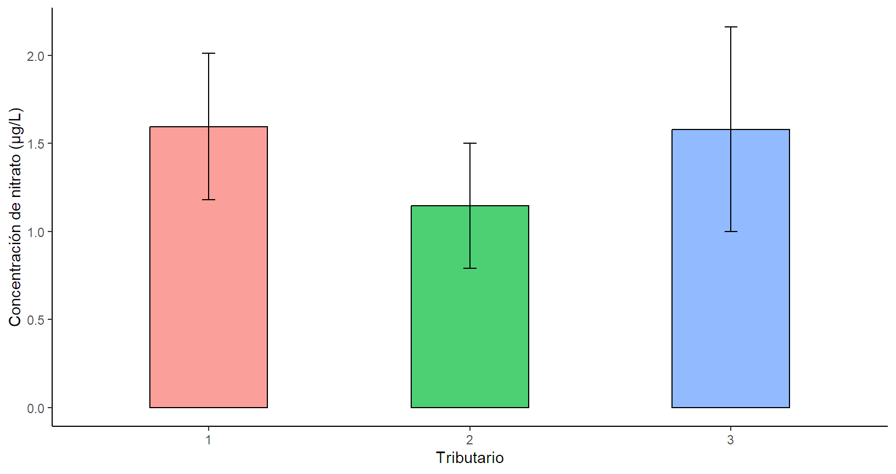
ggplot(A,aes(x=Oxigeno,y=Caloneis,color=Tributario))+
geom_point(pch=16,cex=3)+
geom_smooth(formula = y~x, method = "lm",se = FALSE)+
stat_regline_equation(aes(label = paste(..eq.label.., ..adj.rr.label..,
sep = "~~~~~")),
label.x = c(5,5,5), label.y = c(42,46,51))+
labs(x="Niveles medio de oxígeno disuelto (mg/L)",
y="Abundancia del género Caloneis (N° de individuos)")+
ylim(c(0,52))+ theme_classic()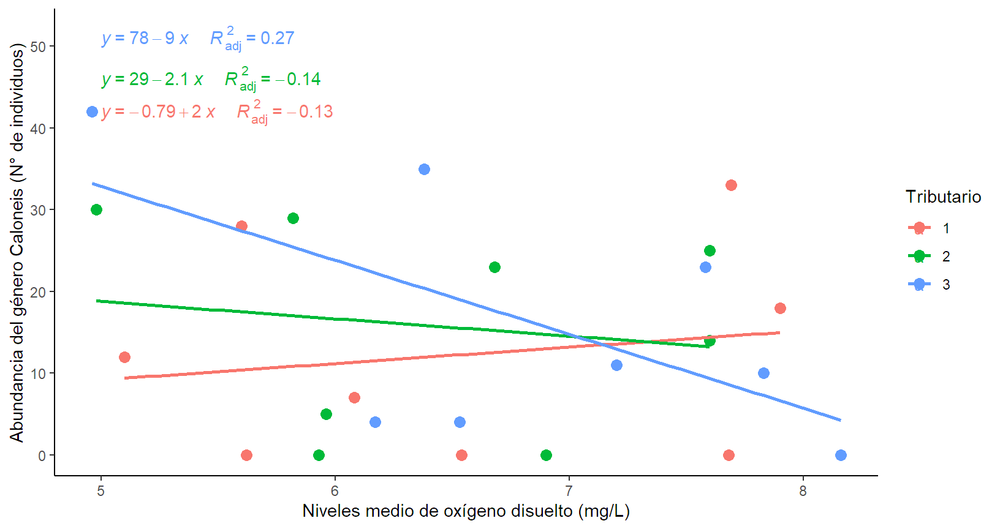
library(GGally)
ggpairs(A,columns = 2:5 ,aes(color=Tributario),
diag = list(continuous = wrap("barDiag", bins =6,
fill ="lightblue",color="blue")),
upper = list(continuous = wrap("cor", size=3, color="black",
method="spearman")),
lower = list(continuous = wrap("smooth", se=FALSE, span=2,
method="loess")))+
theme_test()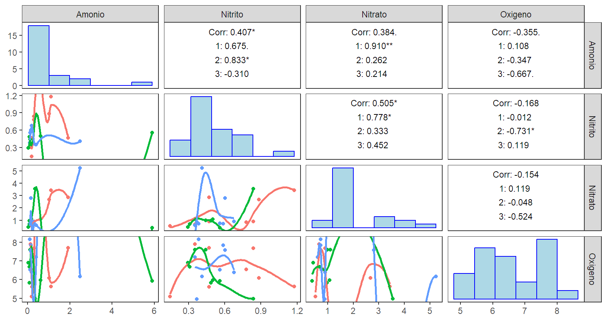
library(corrplot)
corrplot(corr = cor(x = A[,2:10], y=A[,11:31],method = "spearman"),
is.corr = TRUE,method = "ellipse",tl.col = "black",tl.cex = 0.8,
addCoef.col = 'black',number.cex = 0.6)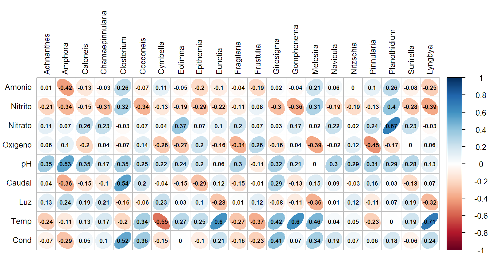
library(MVN)
mvn(data = A[,2:10],univariateTest = "SW")$univariateNormality Test Variable Statistic p value Normality
1 Shapiro-Wilk Amonio 0.5194 <0.001 NO
2 Shapiro-Wilk Nitrito 0.9295 0.095 YES
3 Shapiro-Wilk Nitrato 0.7245 <0.001 NO
4 Shapiro-Wilk Oxigeno 0.9378 0.1457 YES
5 Shapiro-Wilk pH 0.9658 0.565 YES
6 Shapiro-Wilk Caudal 0.8440 0.0017 NO
7 Shapiro-Wilk Luz 0.4298 <0.001 NO
8 Shapiro-Wilk Temp 0.9099 0.0351 NO
9 Shapiro-Wilk Cond 0.6544 <0.001 NO library(MVN)
mvn(data = A[,2:10],mvnTest = "mardia",multivariatePlot = "qq")$multivariateNormality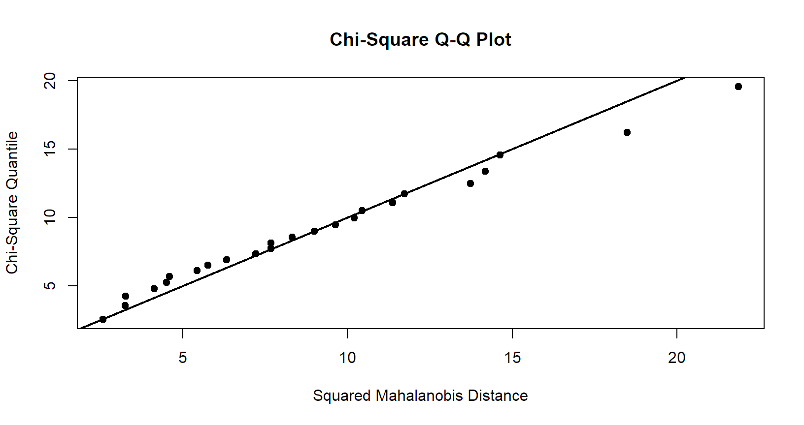
Test Statistic p value Result
1 Mardia Skewness 232.492752035272 0.00042051160086858 NO
2 Mardia Kurtosis 0.944739086867126 0.344792096698599 YES
3 MVN <NA> <NA> NOlibrary(biotools)
A<-as.data.frame(A)
boxM(data = A[,2:4],grouping = A[,1])
Box's M-test for Homogeneity of Covariance Matrices
data: A[, 2:4]
Chi-Sq (approx.) = 48.977, df = 12, p-value = 2.111e-06library(rstatix)
A %>%
cor_test(Amonio,Nitrito, Nitrato,pH,Oxigeno,Caudal,Luz,Temp,Cond,
method = "spearman") %>%
as.data.frame() %>% select(var1,var2, cor,p) %>%
filter(p<0.05&var1!=var2) var1 var2 cor p
1 Amonio Nitrito 0.41 4.84e-02
2 Nitrito Amonio 0.41 4.84e-02
3 Nitrito Nitrato 0.51 1.18e-02
4 Nitrato Nitrito 0.51 1.18e-02
5 Caudal Cond 0.78 5.80e-06
6 Cond Caudal 0.78 5.80e-06library(psych)
cortest.bartlett(R = cor(A[,2:5],method = "spearman"),
n = nrow(A))$chisq
[1] 13.81275
$p.value
[1] 0.0317992
$df
[1] 6library(tidyverse)
A[,1:6] %>%
group_by(Tributario) %>%
mahalanobis_distance %>%
as.data.frame() %>%
add_column(qchisq=rep(round(qchisq(p = 0.999,df = 5),4),24)) %>%
select(mahal.dist, is.outlier, qchisq) mahal.dist is.outlier qchisq
1 4.317 FALSE 20.515
2 3.113 FALSE 20.515
3 8.181 FALSE 20.515
4 4.696 FALSE 20.515
5 6.826 FALSE 20.515
6 3.806 FALSE 20.515
7 5.523 FALSE 20.515
8 3.298 FALSE 20.515
9 5.841 FALSE 20.515
10 20.436 FALSE 20.515
11 0.624 FALSE 20.515
12 1.201 FALSE 20.515
13 8.172 FALSE 20.515
14 2.233 FALSE 20.515
15 1.643 FALSE 20.515
16 1.253 FALSE 20.515
17 2.802 FALSE 20.515
18 2.502 FALSE 20.515
19 13.966 FALSE 20.515
20 2.415 FALSE 20.515
21 4.206 FALSE 20.515
22 0.926 FALSE 20.515
23 3.325 FALSE 20.515
24 3.691 FALSE 20.515